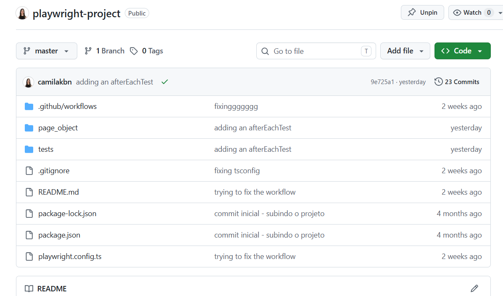
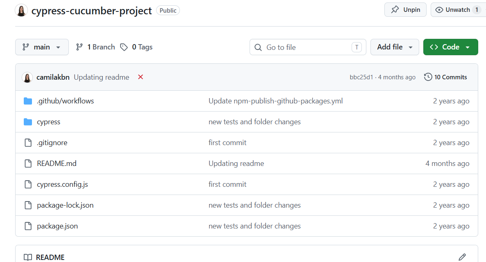
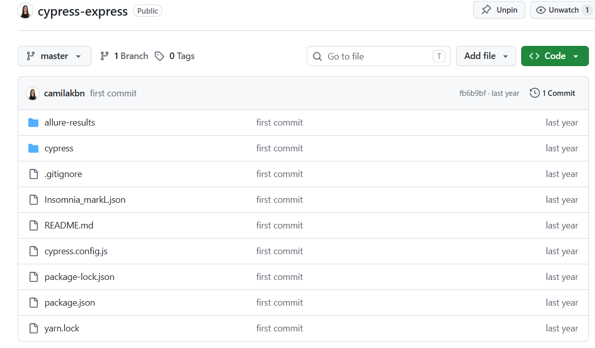
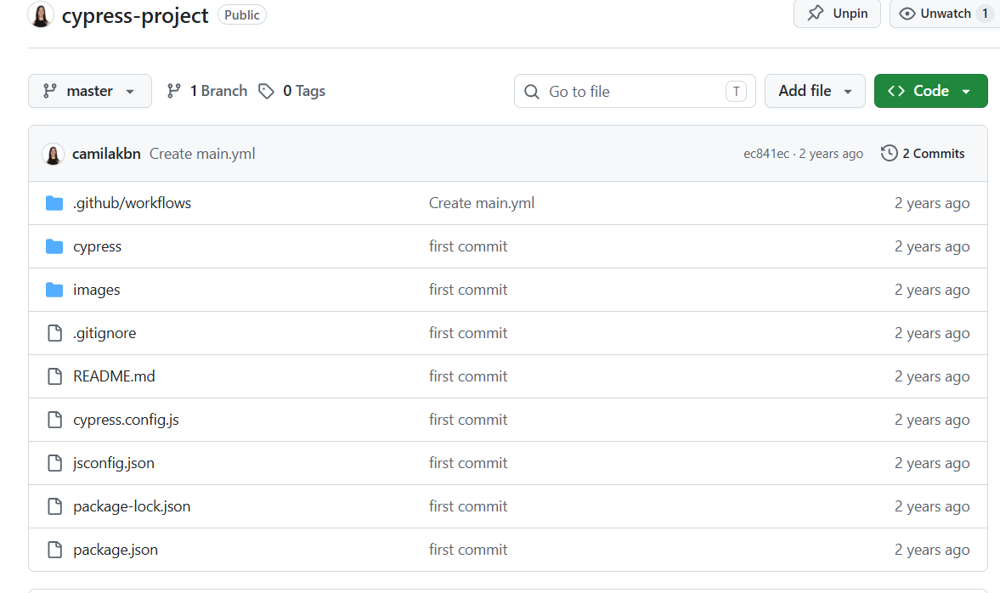
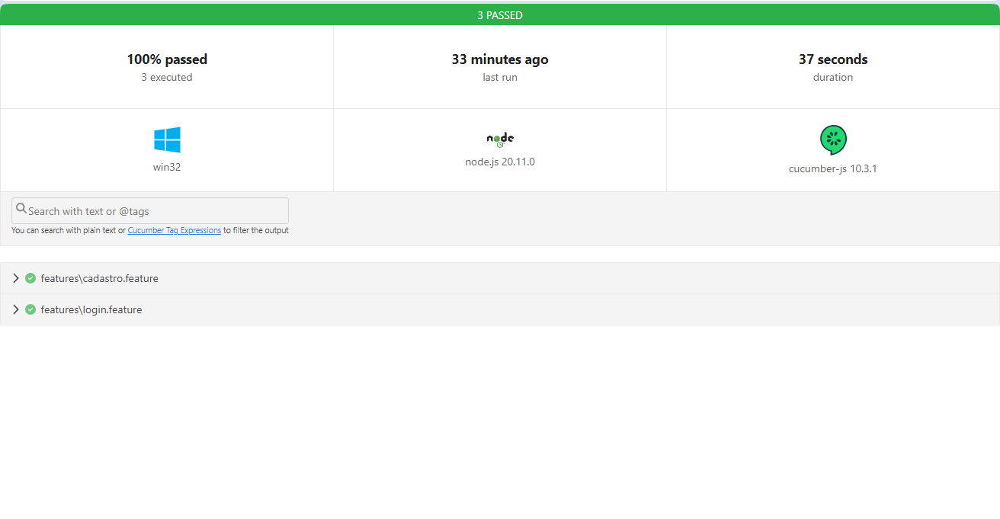
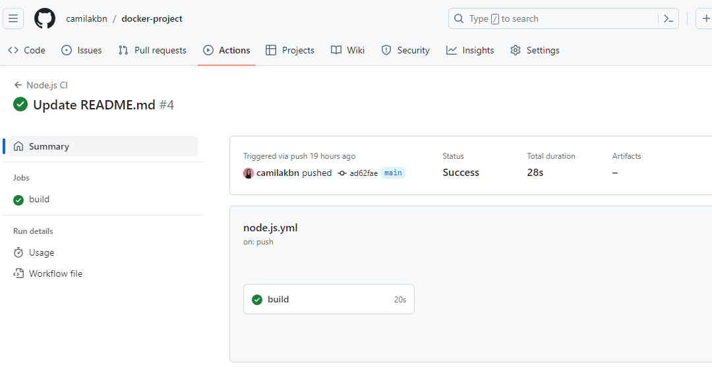

This is the home page of my portfolio. You can check the code I made here.

This is my Playwright project using TypeScript. You can check it out here: here.

This is my Cypress-Cucumber project using JavaScript. You can check it out here.

This is my Cypress-express project using JavaScript. You can check it out here.

This is my Cypress project using JavaScript. You can check it out here.

These are the tests i made using selenium webdriver and cucumber. You can check it out here.

This is the test i made in my docker compose project. You can check it out here.